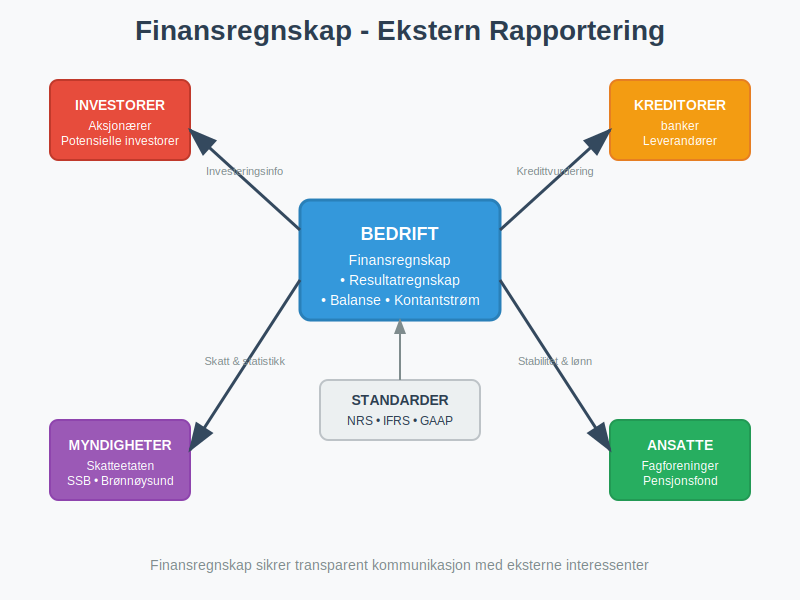
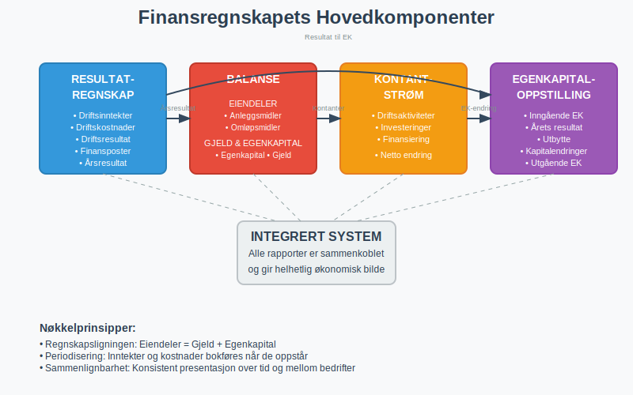
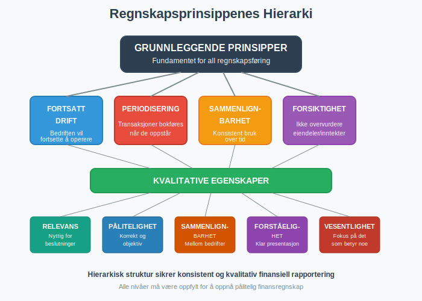
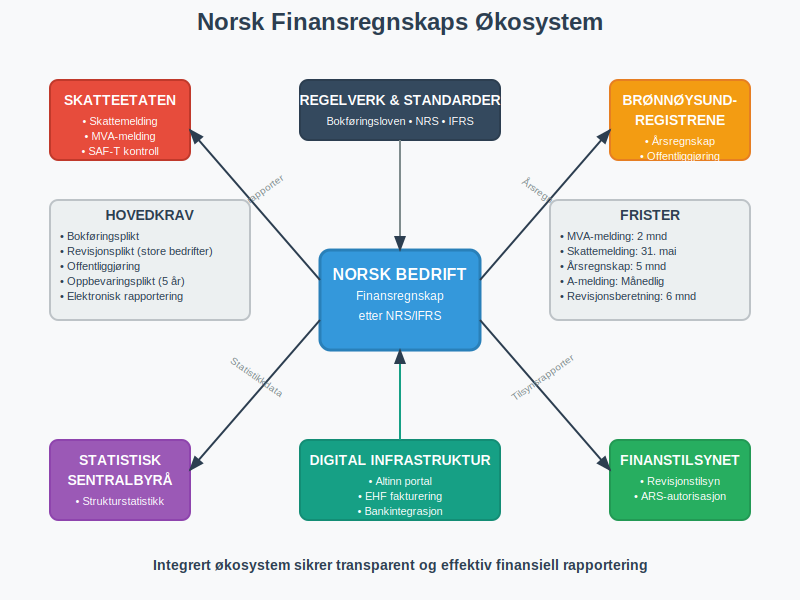

Finansregnskap er den delen av regnskapet som fokuserer på ekstern rapportering til interessenter utenfor bedriften. Det er et standardisert system for å kommunisere bedriftens økonomiske stilling, resultater og kontantstrømmer til investorer, kreditorer, myndigheter og andre eksterne parter. Finansregnskapet følger strenge regnskapsstandarder og lovkrav for å sikre sammenlignbarhet, pålitelighet og transparens.
Finansregnskapets Formål og Målgrupper
Finansregnskapet tjener som kommunikasjonsverktøy mellom bedriften og dens eksterne interessenter. I motsetning til ledelsesregnskap, som er internt rettet og fleksibelt, er finansregnskapet strengt regulert og standardisert.

Primære Interessenter
Finansregnskapet retter seg mot flere kritiske interessentgrupper:
-
Investorer og Aksjonærer: Trenger informasjon for å vurdere investeringsmuligheter og overvåke sine investeringer. For aksjeselskaper er dette spesielt viktig for å vurdere aksjekapital og aksjeklasser.
-
Kreditorer og Långivere: Vurderer bedriftens betalingsevne og kredittverdighet før de gir lån eller kreditt.
-
Myndigheter: Bruker finansregnskapet til skatteberegning, statistikk og tilsynsformål. Dette inkluderer rapportering til Skatteetaten, SSB og andre offentlige etater.
-
Leverandører: Vurderer bedriftens evne til å betale for varer og tjenester, ofte gjennom analyse av arbeidskapital og likviditet.
-
Ansatte og Fagforeninger: Interessert i bedriftens stabilitet og evne til å opprettholde arbeidsplasser og lønninger.
Regnskapsstandarder og Rammeverk
Finansregnskapet bygger på etablerte regnskapsstandarder som sikrer konsistens og sammenlignbarhet på tvers av bedrifter og land.
Norske Regnskapsstandarder (NRS)
I Norge følger de fleste bedrifter Norske Regnskapsstandarder (NRS), som er basert på EU-direktiver og tilpasset norske forhold. Disse standardene dekker:
- God regnskapsskikk: Grunnleggende prinsipper for regnskapsføring
- Måling og verdsetting: Hvordan eiendeler og gjeld skal verdsettes
- Presentasjon: Hvordan regnskapet skal presenteres
International Financial Reporting Standards (IFRS)
Større børsnoterte selskaper må følge IFRS, som er globale regnskapsstandarder. IFRS sikrer internasjonal sammenlignbarhet og er obligatorisk for:
- Børsnoterte selskaper i EU/EØS
- Selskaper som ønsker internasjonal kapital
- Datterselskaper av utenlandske konsern
For en omfattende forståelse av IFRS, inkludert historisk utvikling, implementering i Norge, og sammenligning med nasjonale standarder, se vår detaljerte guide til IFRS.
Sammenligning av Standarder
| Aspekt | NRS | IFRS |
|---|---|---|
| Anvendelse | Norske ikke-børsnoterte selskaper | Børsnoterte selskaper og internasjonale konsern |
| Kompleksitet | Enklere, tilpasset SMB | Mer kompleks, detaljert |
| Oppdateringsfrekvens | Sjeldnere endringer | Hyppige oppdateringer |
| Verdivurdering | Hovedsakelig historisk kost | Mer bruk av virkelig verdi |
| Notekrav | Mindre omfattende | Extensive notekrav |
Finansielle instrumenter
Finansregnskapet omfatter også måling og presentasjon av finansielle instrumenter, inkludert derivater som opsjoner, futures og swaps. Les mer i vår detaljerte guide til Hva er Derivater?.
Finansregnskapets Hovedkomponenter
Finansregnskapet består av flere sammenkoblede rapporter som gir et helhetlig bilde av bedriftens økonomi.

1. Resultatregnskapet
Resultatregnskapet viser bedriftens inntekter, kostnader og nettoresultat over en bestemt periode (vanligvis ett år). Det gir svar på spørsmålet: “Hvor lønnsom er bedriften?”
Hovedkomponenter inkluderer:
- Driftsinntekter: Inntekter fra kjernevirksomheten
- Driftskostnader: Kostnader knyttet til den daglige driften
- Driftsresultat: Resultatet fra kjernevirksomheten
- Finansposter: Renteinntekter og rentekostnader
- Skattekostnad: Beregnet skatt på årets resultat
2. Balansen
Balansen viser bedriftens økonomiske stilling på et bestemt tidspunkt. Den følger den grunnleggende regnskapsligningen:
Eiendeler = Gjeld + Egenkapital
Balansen er delt i:
- Anleggsmidler: Langsiktige eiendeler som bygninger, maskiner og immaterielle rettigheter
- Omløpsmidler: Kortsiktige eiendeler som varelager, kundefordringer og kontanter
- Egenkapital: Eiernes andel av bedriften
- Langsiktig gjeld: Forpliktelser med forfallstid over ett år
- Kortsiktig gjeld: Forpliktelser med forfallstid innen ett år
3. Kontantstrømoppstillingen
Kontantstrømoppstillingen viser hvordan kontanter strømmer inn og ut av bedriften og er en kritisk komponent i finansregnskapet. Den gir innsikt i bedriftens likviditet og evne til å generere kontanter fra driften.
Kontantstrømoppstillingen kategoriserer kontantstrømmer i tre hovedområder:
| Aktivitetstype | Beskrivelse | Eksempler |
|---|---|---|
| Driftsaktiviteter | Kontantstrømmer fra kjernevirksomheten | Innbetalinger fra kunder, utbetalinger til leverandører |
| Investeringsaktiviteter | Kjøp og salg av langsiktige eiendeler | Kjøp av maskiner, salg av bygninger |
| Finansieringsaktiviteter | Endringer i kapitalstruktur | Låneopptak, utbytteutbetalinger, aksjeemisjoner |
For en omfattende forståelse av kontantstrømoppstillingens struktur, utarbeidelsesmetoder og analyse, se vår detaljerte guide til kontantstrømoppstilling. For dyptgående analyseteknikker og praktisk anvendelse av kontantstrømdata, anbefaler vi også vår omfattende artikkel om kontantstrømanalyse.
4. Egenkapitaloppstillingen
Viser endringer i egenkapitalen gjennom året, inkludert:
- Årets resultat
- Utbytteutbetalinger
- Kapitalinnskudd
- Andre egenkapitalendringer
Regnskapsprinsipper og Kvalitetskrav
Finansregnskapet bygger på fundamentale prinsipper som sikrer kvalitet og pålitelighet i den finansielle rapporteringen.

Grunnleggende Prinsipper
- Fortsatt drift: Forutsetning om at bedriften vil fortsette driften
- Periodisering: Inntekter og kostnader bokføres når de oppstår, ikke når kontanter mottas/betales
- Sammenlignbarhet: Konsistent bruk av regnskapsprinsipper over tid
- Forsiktighet: Ikke overvurdere eiendeler eller undervurdere gjeld
Kvalitative Egenskaper
Finansiell informasjon må oppfylle flere kvalitetskrav:
| Egenskap | Beskrivelse | Praktisk Betydning |
|---|---|---|
| Relevans | Informasjonen må være nyttig for beslutninger | Fokus på vesentlig informasjon |
| Pålitelighet | Informasjonen må være korrekt og objektiv | Korrekt dokumentasjon og bilagsbehandling |
| Sammenlignbarhet | Mulighet til å sammenligne med andre bedrifter | Standardiserte formater og prinsipper |
| Forståelighet | Informasjonen må være klar og begripelig | Tydelig presentasjon og Noter |
Verdivurdering og Måling
En kritisk del av finansregnskapet er hvordan eiendeler og gjeld skal måles og verdsettes.
Verdivurderingsmetoder
- Historisk kost: Anskaffelseskost minus akkumulerte avskrivninger
- Virkelig verdi: Markedsverdi på måletidspunktet
- Netto realisasjonsverdi: Forventet salgspris minus salgsomkostninger
- Nåverdi: Diskontert verdi av fremtidige kontantstrømmer
Spesielle Vurderingsområder
- Varelager: Vanligvis verdsatt til laveste av kost og netto realisasjonsverdi
- Kundefordringer: Justert for forventede tap på fordringer
- Anleggsmidler: Systematisk avskrivning over brukstiden
Norske Særkrav og Rapportering
I Norge har finansregnskapet spesielle krav og sammenhenger med offentlig rapportering.

Lovpålagte Rapporter
Norske bedrifter må levere flere rapporter basert på finansregnskapet:
- Årsregnskap: Til Brønnøysundregistrene innen frister
- Kvartalsrapporter: Børsnoterte selskaper må publisere kvartalsrapporter innen to måneder etter kvartalets slutt
- Skattemelding: Basert på regnskapsresultatet med skattemessige justeringer
- MVA-melding: Periodisk rapportering av merverdiavgift
Revisjonsplikt
Større bedrifter har revisjonsplikt, hvor en autorisert revisor må bekrefte at finansregnskapet gir et rettvisende bilde.
Offentliggjøring
Aksjeselskaper og andre selskapsformer må offentliggjøre sitt årsregnskap, som blir tilgjengelig for allmennheten gjennom Brønnøysundregistrene.
Analyse og Bruk av Finansregnskap
Finansregnskapet er grunnlaget for omfattende økonomisk analyse og beslutninger.
Finansiell Analyse
Interessenter bruker ulike analyseteknikker:
- Forholdstallanalyse: Sammenligning av nøkkeltall som egenkapitalrentabilitet og dekningsgrad
- KPI-analyse: Systematisk måling av prestasjonsindikatorer
- Trendanalyse: Utvikling over tid
- Sammenlignende analyse: Benchmarking mot konkurrenter
Beslutningsgrunnlag
Finansregnskapet brukes til:
- Investeringsbeslutninger: Vurdering av lønnsomhet og risiko
- Kredittvurdering: Analyse av betalingsevne
- Strategisk planlegging: Grunnlag for fremtidige beslutninger, inkludert vurdering av konjunktursvingninger
Digitalisering og Fremtiden
Finansregnskapet er i stadig utvikling, drevet av teknologiske fremskritt og endrede krav.
Automatisering
Moderne teknologi transformerer finansregnskapet:
- Automatisk bilagsregistrering: AI-basert gjenkjenning av fakturaer og bilag
- Sanntidsrapportering: Kontinuerlig oppdatering av finansielle data
- Integrerte systemer: ERP-systemer som kobler alle forretningsprosesser
Nye Rapporteringskrav
- CSRD: Bærekraftsrapportering blir obligatorisk for større bedrifter
- ESG-rapportering: Miljø, sosiale forhold og selskapsstyring
- Digitale standarder: Økt bruk av strukturerte dataformater
Utfordringer og Beste Praksis
Finansregnskapet står overfor flere utfordringer som krever kontinuerlig oppmerksomhet.
Vanlige Utfordringer
- Kompleksitet: Økende krav til detaljering og Noter
- Teknologisk utvikling: Behov for oppdatering av systemer og kompetanse
- Regulatoriske endringer: Hyppige endringer i standarder og lovkrav
- Kvalitetssikring: Sikre nøyaktighet og fullstendighet
Beste Praksis
For å sikre høy kvalitet i finansregnskapet bør bedrifter:
- Implementere sterke interne kontroller: Inkludert attestering og avstemming
- Investere i kompetanse: Kontinuerlig opplæring av regnskapspersonell
- Bruke profesjonelle tjenester: Vurdere autoriserte regnskapsførerselskaper
- Planlegge for endringer: Forberede seg på nye krav og standarder
Konklusjon
Finansregnskap er ryggraden i ekstern finansiell kommunikasjon og en kritisk komponent for tillit i markedsøkonomien. Det gir standardisert, pålitelig informasjon som gjør det mulig for eksterne interessenter å ta informerte beslutninger om bedriften.
For norske bedrifter er det viktig å forstå både internasjonale standarder og nasjonale særkrav. Med økende digitalisering og nye rapporteringskrav som bærekraft, vil finansregnskapet fortsette å utvikle seg og kreve kontinuerlig oppmerksomhet fra ledelse og regnskapspersonell.
En solid forståelse av finansregnskapets prinsipper, komponenter og anvendelse er essensielt for alle som arbeider med eller bruker finansiell informasjon i næringslivet.